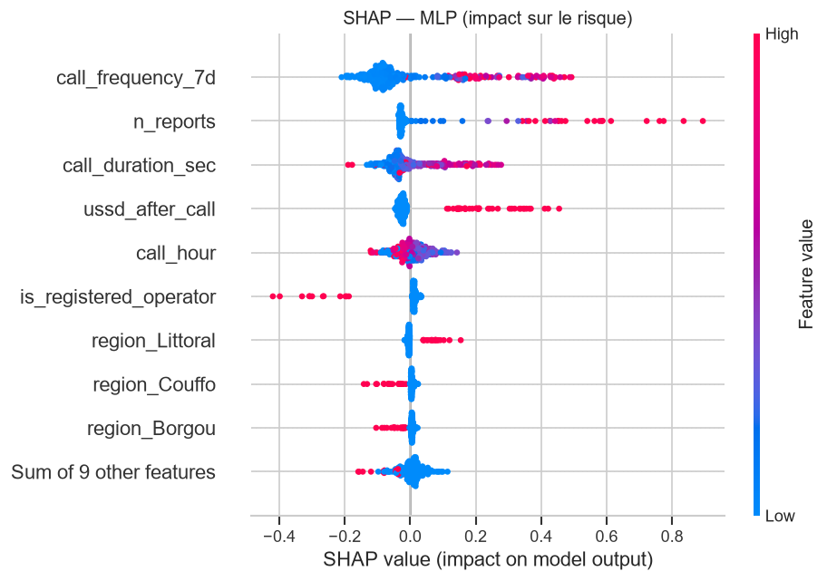

4 modèles comparés. Le recall prime.
Une fraude ratée coûte plus cher à la victime qu'une alerte de trop. Tous les modèles sont réglés pour rater le moins de fraudes possible, puis mesurés une seule fois sur 1 500 appels jamais vus.
| Modèle | Recall | Précision | F1 | AUC-ROC | Fraudes ratées | Fausses alertes |
|---|
Retenu pour l'application : le réseau de neurones (MLP)
À 0,007 point d'AUC du meilleur modèle, il s'exporte nativement en TensorFlow Lite : 7,4 Ko, moins d'une milliseconde par appel, aucun besoin d'Internet. Le fichier embarqué donne exactement les mêmes décisions que le modèle évalué ici, vérifié sur les 1 500 appels de test.
Un pipeline complet, documenté cellule par cellule.
Il n'existe aucun jeu de données public d'appels frauduleux au Bénin. Nous en avons construit un, en calibrant chaque distribution sur des rapports réels et en y mettant volontairement des cas ambigus.
Dataset
10 000 appels synthétiques, 15 % de fraude.
EDA
Distributions, corrélations, déséquilibre 15/85.
Prétraitement
One-hot, normalisation, split stratifié 70/15/15.
Modèles
4 modèles, validation croisée 5 plis, critère F2.
Évaluation
Seuil réglé sur la validation, mesure unique sur le test.
Export
Deux modèles TFLite : à la sonnerie et après l'appel.
Chaque alerte est explicable.
Les valeurs SHAP montrent ce qui pousse le modèle vers « fraude » : un numéro qui appelle des dizaines de personnes en une semaine, des signalements de la communauté, un appel de plusieurs minutes, puis un code USSD tapé juste après.
Ce que le modèle rate, et qui le rattrape
95 % des fraudes manquées viennent de numéros neufs, jamais signalés. C'est la couche 2 qui les arrête : même un fraudeur inconnu est bloqué au moment où la victime tape le code de transfert.

Tout est reproductible.
Notebook Jupyter, dataset, code de l'application et de l'API sont publics.